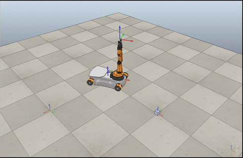
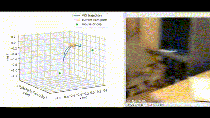
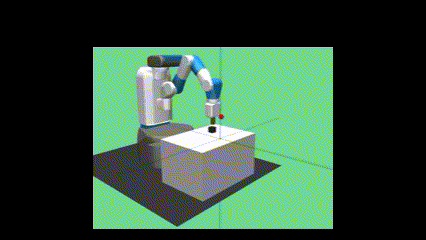
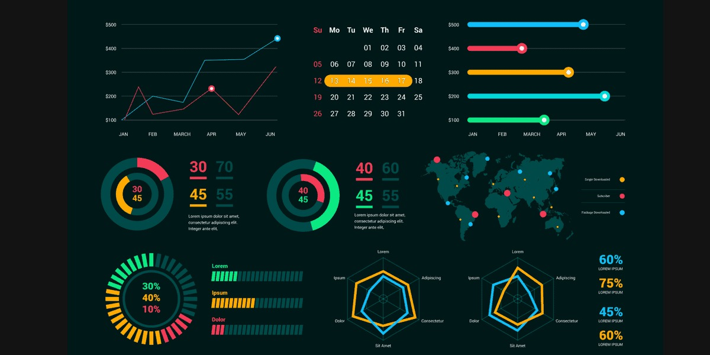

About Me
As a robotics engineer with a focus on mapping and localization, I develop intelligent systems that enable autonomous robots to understand and interact with their environment safely and efficiently.
With a strong background in robotics, electronics, and mechanical systems—alongside experience in software development and program management—I take a systems-level approach to solving real-world challenges in autonomous navigation, perception, and control.
My work bridges the gap between research and application, aligning with company’s mission to turn cutting-edge ideas into practical, industrial-strength robotics solutions. I thrive in interdisciplinary teams, enjoy tackling complex problems, and have a proven ability to lead and contribute to high-impact robotics projects from concept to deployment.
I'm excited by the opportunity to help shape the future of autonomous robotics and contribute to innovations that have real societal value. If you'd like to collaborate or discuss opportunities, please feel free to contact me using the information below.
Projects

PoseCNN Implementation with ROS
×
PoseCNN Implementation with ROS
PoseCNN is a convolutional neural network architecture designed to estimate the 6D pose (3D translation + 3D rotation) of objects directly from RGB images. It operates in two main stages: semantic segmentation to localize objects, and pose regression to estimate their 3D position and orientation. The model leverages a modified VGG16 backbone and integrates translation regression and quaternion-based rotation estimation in a unified framework.
For custom objects, PoseCNN requires:
- A synthetic or real dataset of labeled 6D poses with accurate object CAD models or meshes.
- Training of the network on these new objects using either the provided training pipelines or fine-tuning pre-trained weights.
- Optional integration with DenseFusion or ICP refinement for increased pose accuracy using RGB-D data.
The architecture is particularly suited for robotics applications such as bin picking, AR interaction, or autonomous manipulation, where real-time object pose understanding is critical. By learning pose information end-to-end from RGB images, PoseCNN avoids heavy reliance on depth data or keypoint detection, making it flexible for various environments and object types.
Note: Due to client confidentiality, the source code is not publicly available.



Real-Time Trajectory Generation using Visual SLAM
Hand-Eye Calibration using OpenCV and PyQt5
SLAM Benchmarking with TurtleBot3 (ROS + Gazebo)

Smart Pick-and-Place GUI (Python + PyQt + RealSense + UR Robots)
MY SKILLS
Robotics
- Robot Operating System (ROS 1 & 2)
- Gazebo Simulator
- MoveIt Motion Planning Framework
- Rviz Visualization Tool
- UR10 Robot
- Elite Robot Platform
- Techman Robot
- KUKA Industrial Robot
- ABB Robot Systems
- TurtleBot Mobile Robot
- Arduino Microcontroller
- Jetson Nano
Programming & Tools
- Python
- C / C++
- Bash
- MATLAB
- Git
- HTML & CSS
- JavaScript
- Docker
- Jenkins
- CI/CD Pipelines
- VS Code
- Linux
Computer Vision
- Image Processing
- 3D Object Detection
- Segmentation
- SLAM (Simultaneous Localization and Mapping)
- Pose Estimation
- OpenCV
- Open3D
- CUDA Programming
- CARLA Simulator
Machine Learning
- Supervised / Unsupervised Learning
- Deep Learning
- Reinforcement Learning
- Model Deployment
- PyTorch
- TensorFlow
- Scikit-learn
- Keras
- XGBoost
Cloud & Deployment
- Docker
- Docker Compose
- Kubernetes (basic)
- Jenkins
- GitHub Actions
- Model Serving
- TensorFlow Serving
- TorchServe
- ONNX Runtime
- AWS (Amazon Web Services)
- Google Cloud Platform (GCP)
- Microsoft Azure (basic)

Data & Visualization
- Pandas
- NumPy
- Matplotlib
- Seaborn
- Jupyter Notebook
- Streamlit
Get In Touch
I'm always open to exciting opportunities, collaboration ideas, or just a good conversation about robotics, AI, or innovative tech. Whether you have a project in mind, want to connect professionally, or simply say hello — feel free to reach out!